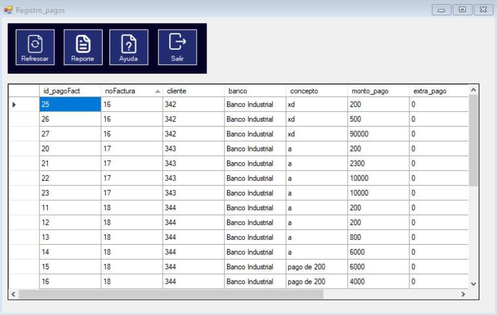
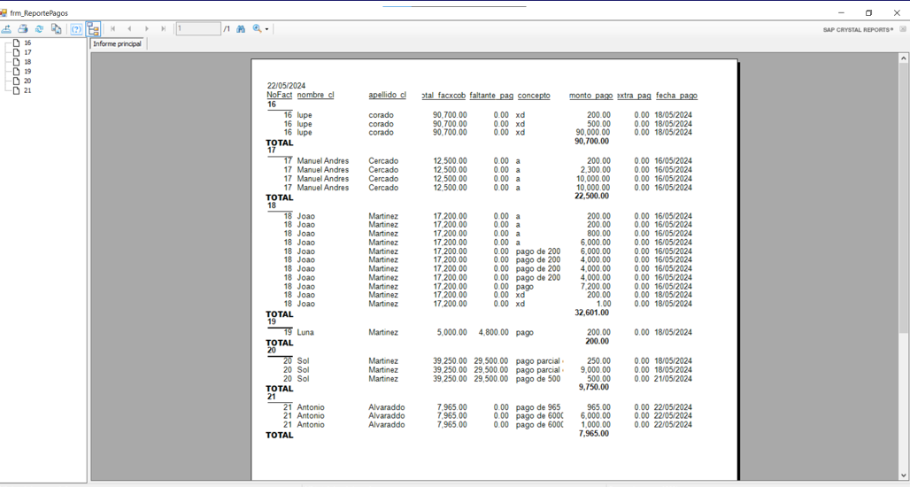

En este apartado se pueden observar los datos de facturas por cobrar , apareceran todos los pagos realizados hasta el momento.
En estos 4 botones agrupados cada uno realiza una función
Tras presionar el boton de "REPORTE" se mostrara el siguiente documento el cual contiene datos relevantes sobre los pagos realizados hasta el momento y cuanto falta para poder completar el pago de la factura.
